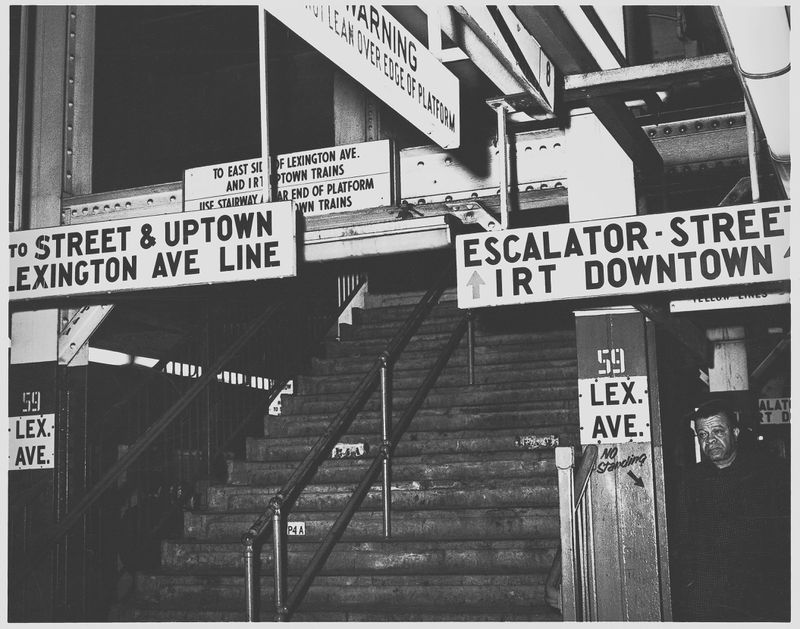

“In 1966, when Massimo Vignelli’s firm was hired to come up with new, clearer signage, riders were confronted with a confusing array of signs with no consistent style, as shown in this photo at the Lexington Avenue–59th Street station.” Photo credit: New York Transit Museum; quoted text: NY Daily News